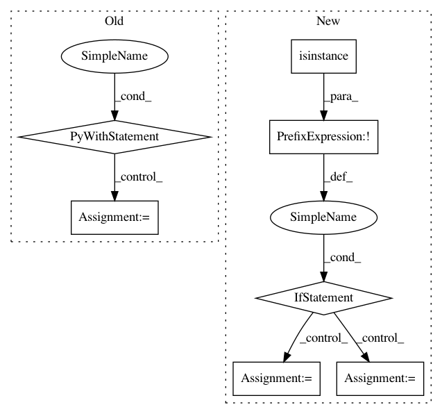

1ee31ee45cc3386cb94bc1f5014f2687da1f63f6,keras/models.py,,save_model,#Any#Any#Any#Any#,35
Before Change
if not proceed:
return
with h5py.File(filepath, mode="w") as f:
f.attrs["keras_version"] = str(keras_version).encode("utf8")
f.attrs["backend"] = K.backend().encode("utf8")
f.attrs["model_config"] = json.dumps({
"class_name": model.__class__.__name__,
"config": model.get_config()
}, default=get_json_type).encode("utf8")
model_weights_group = f.create_group("model_weights")
if legacy_models.needs_legacy_support(model):
model_layers = legacy_models.legacy_sequential_layers(model)
else:
model_layers = model.layers
topology.save_weights_to_hdf5_group(model_weights_group, model_layers)
if include_optimizer and hasattr(model, "optimizer"):
if isinstance(model.optimizer, optimizers.TFOptimizer):
warnings.warn(
"TensorFlow optimizers do not "
"make it possible to access "
"optimizer attributes or optimizer state "
"after instantiation. "
"As a result, we cannot save the optimizer "
"as part of the model save file."
"You will have to compile your model again "
"after loading it. "
"Prefer using a Keras optimizer instead "
"(see keras.io/optimizers).")
else:
f.attrs["training_config"] = json.dumps({
"optimizer_config": {
"class_name": model.optimizer.__class__.__name__,
"config": model.optimizer.get_config()
},
"loss": model.loss,
"metrics": model.metrics,
"sample_weight_mode": model.sample_weight_mode,
"loss_weights": model.loss_weights,
}, default=get_json_type).encode("utf8")
// Save optimizer weights.
symbolic_weights = getattr(model.optimizer, "weights")
if symbolic_weights:
optimizer_weights_group = f.create_group("optimizer_weights")
weight_values = K.batch_get_value(symbolic_weights)
weight_names = []
for i, (w, val) in enumerate(zip(symbolic_weights,
weight_values)):
// Default values of symbolic_weights is /variable
// for Theano and CNTK
if K.backend() == "theano" or K.backend() == "cntk":
if hasattr(w, "name"):
if w.name.split("/")[-1] == "variable":
name = str(w.name) + "_" + str(i)
else:
name = str(w.name)
else:
name = "param_" + str(i)
else:
if hasattr(w, "name") and w.name:
name = str(w.name)
else:
name = "param_" + str(i)
weight_names.append(name.encode("utf8"))
optimizer_weights_group.attrs["weight_names"] = weight_names
for name, val in zip(weight_names, weight_values):
param_dset = optimizer_weights_group.create_dataset(
name,
val.shape,
dtype=val.dtype)
if not val.shape:
// scalar
param_dset[()] = val
else:
param_dset[:] = val
f.flush()
def load_model(filepath, custom_objects=None, compile=True):
Loads a model saved via `save_model`.
// Arguments
After Change
from . import __version__ as keras_version
if not isinstance(filepath, h5py.File):
// If file exists and should not be overwritten.
if not overwrite and os.path.isfile(filepath):
proceed = ask_to_proceed_with_overwrite(filepath)
if not proceed:
return
f = h5py.File(filepath, mode="w")
opened_new_file = True
else:
f = filepath
opened_new_file = False
try:
f.attrs["keras_version"] = str(keras_version).encode("utf8")
f.attrs["backend"] = K.backend().encode("utf8")
f.attrs["model_config"] = json.dumps({
In pattern: SUPERPATTERN
Frequency: 3
Non-data size: 7
Instances
Project Name: keras-team/keras
Commit Name: 1ee31ee45cc3386cb94bc1f5014f2687da1f63f6
Time: 2018-03-31
Author: predrag.gruevski@gmail.com
File Name: keras/models.py
Class Name:
Method Name: save_model
Project Name: dmlc/gluon-nlp
Commit Name: a947d66d28baaae1302363556a8a18b04fa6aa40
Time: 2018-08-16
Author: leonard@lausen.nl
File Name: gluonnlp/embedding/evaluation.py
Class Name: ThreeCosMul
Method Name: __init__
Project Name: keras-team/keras
Commit Name: 1ee31ee45cc3386cb94bc1f5014f2687da1f63f6
Time: 2018-03-31
Author: predrag.gruevski@gmail.com
File Name: keras/models.py
Class Name:
Method Name: load_model